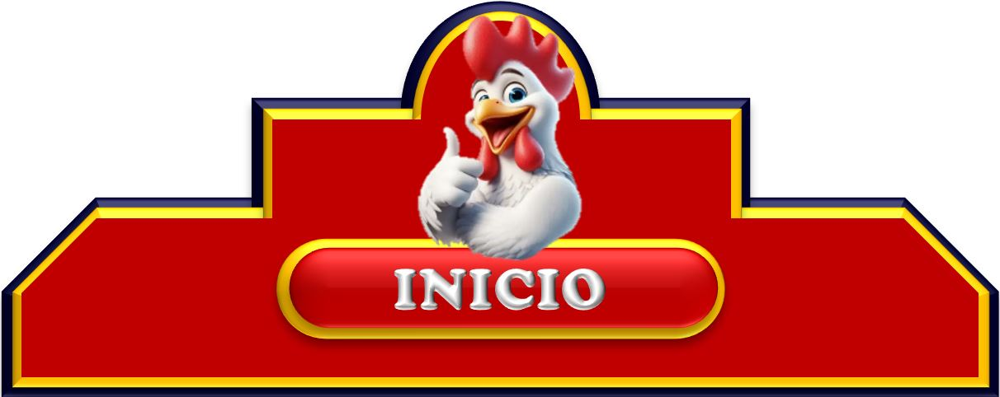

"Pollo Feliz" se remonta a 1975, cuando el empresario mexicano José L. Sánchez Barroso decidió abrir un restaurante de pollo asado en la ciudad de Ciudad Obregón, Sonora, México. El nombre "Pollo Feliz" fue elegido para transmitir la idea de que la comida era deliciosa y que los clientes se sentirían felices al disfrutarla.